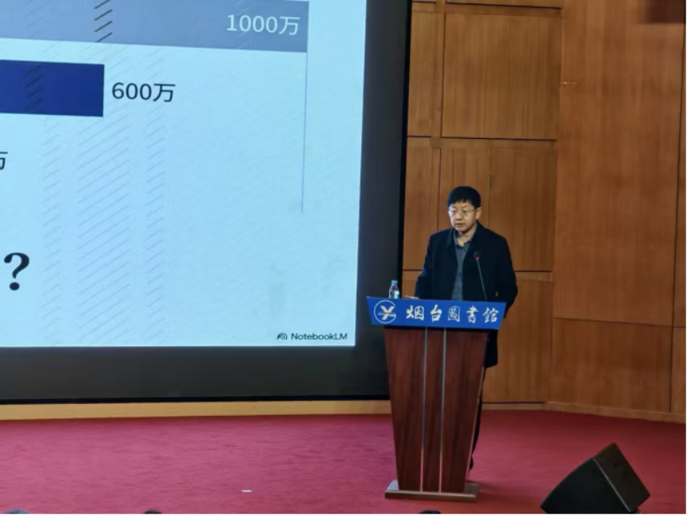

动态
社会活动
学术会议、讲座、研讨及其他社会参与记录。
烟台市知识产权执法司法保护工作座谈会召开
2026年4月23日，烟台市知识产权执法司法保护工作座谈会在烟台开发区顺利召开。烟台市中级人民法院、市公安局、市市场监督管理局、开发区市监局及烟台市知识产权协会、烟台大学知识产权研究中心等相关单位部门负责人出席会议。会议总结2025年度知识产权保护工作成效，谋划2026年重点任务，深入推进"知识产权保护一站式服务"战略合作落地见效。
会上，烟台市知识产权协会全面汇报了2025年工作开展情况，围绕协同保护、平台建设、服务优化等方面梳理成果、总结经验。与会各单位紧扣知识产权执法司法衔接、维权援助、服务提升等关键内容开展交流研讨，进一步明晰工作思路、强化协作共识，推动构建全链条、高效率、专业化的知识产权保护格局。
此次座谈会的召开，进一步夯实了烟台市知识产权执法司法协同保护基础，推动多方合作机制更加完善、协作更加紧密、运行更加高效。下一步，烟台市知识产权协会将持续牵头统筹各方资源，深化战略合作落地，全面提升知识产权创造、运用、保护、管理和服务水平，为优化全市营商环境、服务经济社会高质量发展提供更加有力的知识产权支撑。
企业知识产权司法保护工作座谈会（世界知识产权日）
为迎接第26个世界知识产权日，深入落实知识产权强国建设部署，持续优化法治化营商环境，搭建企业与司法机关常态化沟通平台，2026年4月9日，由烟台市知识产权协会主办的企业知识产权司法保护工作座谈会在烟台开发区成功举办。青岛市中级人民法院、烟台市中级人民法院相关领导及协会会员企业代表参会，会议由任广科会长主持。
本次座谈会是协会与烟台市中级人民法院、青岛市中级人民法院签订的"知识产权一站式服务战略合作协议"的具体践行。座谈会上，青岛中院、烟台中院先后介绍了两地知识产权司法保护工作开展情况；协会秘书长毕荣建汇报了协会本届知识产权相关工作推进情况。万华化学、杰瑞石油、绿叶制药、万华实业、龙源技术、张裕集团等企业代表依次发言，介绍企业知识产权管理、保护与运用工作情况，并提出实务中遇到的难点问题，两地法院专家现场逐一答疑，给出专业司法指导与解决方案。
青岛中院、烟台中院相关领导在总结发言中指出，知识产权是企业核心竞争力，司法机关将持续强化知识产权司法保护力度，畅通企业沟通渠道，精准对接企业司法需求。此次座谈会以实际行动深化了战略合作、推进了协同保护，进一步畅通了司法机关与企业的沟通渠道，有效提升了企业知识产权保护意识与实务能力。
协会驻芝罘区企业服务中心工作站揭牌暨AI在法律和知识产权中的应用讲座
4月7日上午，烟台市知识产权协会驻芝罘区企业服务中心工作站正式揭牌。芝罘区行政审批服务局、区市场监督管理局、烟台市社会组织总会及协会相关负责人、企业代表共50余人参加活动。活动中，芝罘区行政审批服务局、区市场监督管理局与烟台市知识产权协会签署战略合作协议，搭建起多方联动、协同高效的知识产权服务体系，标志着协会首个驻区服务站点正式启用。
作为协会延伸服务触角、精准赋能企业的重要平台，工作站将依托协会资源优势，聚焦企业知识产权实际需求，常态化开展政策解读、培训交流、纠纷调解、风险防控、法律咨询等一站式服务。
揭牌仪式后，任广科会长以《AI在法律和知识产权工作中的应用》为题开展专题讲座，结合AI技术发展趋势与企业实务，讲解知识产权全链条应用方法与风险防控要点，为企业提升保护效率、降低风控成本提供专业指导，得到参会企业一致好评。与会人员还现场参观了工作站服务专窗，站点配备专职人员，可实现企业需求就近响应、高效办理。
烟台市知识产权协会召开第五届三次理事会议
2月6日，烟台市知识产权协会第五届三次理事会议在烟台开发区长江路302号中节能科技园内1号楼顺利召开，全体理事单位代表参会。会上，任广科会长代表协会作2025年度工作总结及2026年工作计划报告。
报告指出，2025年协会始终以服务会员为宗旨、以促进烟台市知识产权事业整体提升为己任，在深化合作机制、举办专业活动、承接政府项目、优化会员服务及加强宣传推广等方面成效显著：深化与公检法市监部门联动，开展20次知识产权相关活动，覆盖1000人次；承接烟台市企业商业秘密管理体系及保护机制建设服务课题，制定多项行业指引；同时通过实地走访调研会员企业、运营微信公众号等方式，切实提升服务效能与行业影响力。
针对2026年工作，任广科会长提出将继续加大部门合作力度、优化会员服务，并筹划标志性活动、分层级实务课程、知识产权人物访谈及茶座等活动，为会员提供更精准、实用的支持。此次会议凝聚了全体理事的智慧与力量，为协会2026年各项工作的顺利开展奠定了坚实基础。
烟台市法学会企业法律风险管理研究会2025年年会

2026年1月10日上午，烟台市法学会企业法律风险管理研究会2025年年会在烟台市图书馆隆重举办。本次活动由烟台市法学会企业法律风险管理研究会主办，烟台市知识产权协会、山东鑫士铭律师事务所、山东金卓税务师事务所协办。
本次活动由研究会常务理事、万华实业集团有限公司副总裁殷山帅主持，烟台市法学会相关领导、国家税务总局烟台市税务局相关领导及嘉宾出席活动，全市研究会会员代表、企业法务、财务人员及律师等共计100余人参加了现场活动。
烟台市法学会企业法律风险管理研究会会长任广科作2025年度工作总结报告。任会长在报告中全面回顾了2025年研究会在凝聚行业力量、搭建交流平台、强化企业法律服务等方面的工作成效，明确了后续将持续深耕企业法律风险管理领域，不断提升服务精准性与实效性，促进行业发展新提升的工作方向。
此次年会为企业法律风险管理领域的专业人士提供了宝贵的交流与学习机会，有效凝聚了行业共识，有助于提升企业法务工作水平，推动企业法律风险管理工作向纵深发展。未来，研究会将继续凝聚各方力量，不断探索创新，为企业在法治轨道上的稳健发展保驾护航，为烟台市优化法治化营商环境、实现高质量发展注入强劲法治动能。
烟台市知识产权协会2025年年会圆满落幕
10月30日，烟台市知识产权协会2025年年会暨"智享经验·共筑生态—烟台知识产权协同发展交流会"在烟台丽景海湾酒店圆满落幕。本次大会由烟台市市场监督管理局指导，烟台市知识产权协会、山东省知识产权研究院主办，烟台市法学会企业法务与风险管理研究会、中国科学院烟台海岸带研究所、知产荟萃协办，来自烟台公检法市监部门、创新企业、高校院所、知识产权服务机构的代表及新闻媒体嘉宾齐聚一堂，共同探讨知识产权协同发展新路径。
与以往年会相比，本次大会在形式和内容上实现了全新突破。协会前期深入调研企业知识产权工作痛点与需求，打破传统"专家授课"的单一模式，创新性地采用"企业实战分享+专家专业点评+现场互动答疑"的架构，让实践经验与理论指导深度融合，切实解决企业实际问题。任广科会长在欢迎辞中表示，本次交流会为推动烟台知识产权协同发展搭建了重要平台，协会将以此次活动为契机，持续助力知识产权事业创新发展。
本次大会共邀请11位头部企业知识产权负责人分享实战经验，5位学界与司法界专家现场点评，通过层层递进的主题交流和高效互动，构建起完整的知识产权协同发展图景。参会企业纷纷表示，大会内容干货满满，实战案例贴合实际，专家点评精准专业，有效解决了工作中的诸多困惑。
为烟台市公安局知识产权警务联络官培训班授课
为深入贯彻落实知识产权保护工作部署，进一步提升全市公安机关打击侵犯知识产权犯罪的能力水平，10月24日，烟台市知识产权协会会长任广科在荣昌生物医药产业园为烟台市公安局知识产权警务联络官培训班授课，授课题目为《商业秘密司法实务分析》，各分、市局及环食药侦支队共20名负责知识产权刑事保护工作的民警参加培训。
任广科会长结合司法实践与行业需求，从五个维度展开深度讲解：系统梳理知识产权体系及本质，夯实理论基础；剖析商业秘密对企业创新发展的核心价值，明确保护意义；针对商业秘密秘密性、同一性认定的实务难点，结合典型案例拆解认定标准；深入分析商业秘密犯罪主观要件，助力精准界定犯罪构成；详细解读商业秘密犯罪的具体行为类型，提供办案指引。整场授课内容兼具专业性与实操性，为参训民警提供了兼具理论高度与实践指导性的专业知识。
烟台机械行业商业秘密保护培训会
7月15日，烟台机械行业商业秘密管理体系及保护机制建设培训会在烟台黄渤海新区知识产权保护中心举行，由市市场监督管理局、黄渤海新区市场监督管理局指导，市知识产权协会与市装备制造业协会联合主办。
专题培训环节，烟台市知识产权协会、烟台市法学会企业法务与风险管理研究会会长任广科结合多年司法实践经验，通过典型案例剖析商业秘密保护的法律边界与裁判逻辑，为企业提供了鲜活的风险警示与应对思路。此次培训内容紧扣行业需求，从政策指引到实务操作、从理论讲解到案例分析，形成了全方位的商业秘密管理和保护指导体系，参会企业表示将以此次培训为契机，加快完善内部管理与保护机制。
首届山东自贸区知识产权司法保护研讨会
为深入贯彻落实国家关于加强知识产权保护的决策部署，进一步提升知识产权司法保护水平，有效保护企业自主创新活力，服务保障经济社会高质量发展，值此全省首个自贸区人民法庭成立之际，由烟台市知识产权协会主办，烟台经济技术开发区人民法院、山东省知识产权研究院、烟台市法学会企业法务与风险管理研究会、知识产权纠纷人民调解委员会共同协办的首届山东自贸区知识产权司法保护研讨会，于6月24日在烟台自贸区法庭成功举办。烟台经济技术开发区人民法院院长于庆荣、烟台市中级人民法院民三庭庭长栾海宁、烟台市知识产权协会会长任广科等出席会议，来自开发区政法委、公安局、检察院、黄渤海新区市监局、自贸区综合协调和制度创新局等相关部门负责同志，知识产权纠纷调解委员会机构代表，以及部分上市公司、高新技术企业代表共计40余人参加了研讨会。
任广科会长在致辞中指出，烟台自贸区法庭的成立具有重要的里程碑意义，为高效化解自贸区内知识产权纠纷提供了强有力的司法保障，他期待与会各方充分交流研讨，共同推动自贸区知识产权保护工作再上新台阶。本次研讨会汇聚了司法、行政、学界、行业组织及企业等多方力量，对于提升山东自贸区知识产权司法保护水平，优化区域创新环境和营商环境，服务保障自贸区高质量发展具有积极的推动作用。会前，与会人员还参观了烟台经济技术开发区人民法院自贸区人民法庭。
走访明石创新调研商业秘密保护工作
为助力企业强化知识产权管理，进一步提升企业商业秘密和专利管理水平，为企业创新发展提供有力支持，4月1日，烟台市知识产权协会走访明石创新（烟台）微纳传感技术研究院有限公司，就商业秘密保护和专利申请布局等工作进行了深入交流。协会会长任广科、明石创新副院长陈新生等参加了座谈。
任广科会长结合以往经验以及明石创新的实际情况，深入讲解了商业秘密保护和专利保护各自的特点：商业秘密保护具有保密性强、保护期限无限制等优势，但一旦泄露维权难度较大；专利保护则具有公开性和法定垄断性，能为企业提供更明确的法律保障，但申请过程相对复杂，保护期限有限。他从实际诉讼纠纷的角度出发，列举了不同行业、不同规模企业在知识产权保护方面的成功经验和惨痛教训，提醒企业关注经营信息、产品销售信息等关键要点，避免陷入知识产权纠纷。
此次走访交流活动，为协会与明石创新搭建了良好的沟通平台，有助于企业更好地掌握商业秘密保护和专利申请布局的策略方法。
人工智能与法律职业研讨会：机遇与挑战并存
2月21日，由烟台市知识产权协会、烟台市法官协会、烟台市法学会企业法律风险管理研究会、烟台大学法学院、烟台市律师协会、山东省知识产权研究院、山东工商学院法学院联合主办的"人工智能与法律职业"研讨会在烟台市知识产权协会举行。作为"烟台法律人"系列对话和研讨会的首次活动，会议吸引了烟台法律界60余位专家学者、法官、律师、公司法务人员参与。
研讨会由任广科会长主持，并邀请基普智能创始人、AI方向微软最有价值专家衣明志，烟台大学法学院教授、烟台大学数字法治研究中心主任于海防，山东工商学院法学院副教授、法学博士孙跃三位嘉宾研讨分享。衣明志作了"人工智能的发展现状及未来趋势"专题演讲，介绍了从机器学习、深度学习到生成式AI的发展历程，并分享了基普智能在AI技术方面的应用实践。
研讨环节中，三位嘉宾围绕人工智能发展现状及未来趋势、对法律职业的影响、法律人如何利用人工智能等议题展开深入讨论。他们指出，人工智能虽无法完全替代法律人的专业判断与人文关怀，但在提高工作效率、辅助法律决策方面作用不容忽视，法律人应在提高情商、持续学习、善用人工智能工具等方面下功夫。此次研讨会作为"烟台法律人"系列活动的开端，为烟台法律界搭建了交流学习平台，也为区域法律职业智能化转型注入新动能。
烟台市知识产权协会召开第五届二次理事会议
近日，烟台市知识产权协会第五届二次理事会在协会二楼会议室举行，14家理事单位代表出席了会议。会上，任广科会长对2024年的工作进行了总结，他表示，在广大理事和会员的支持下，协会各项工作稳步推进：积极深化与公检法、市监部门的合作机制，组织开展了多项高质量的知识产权保护活动，为会员企业提供了切实有效的法律和政策支持；同时主动承接政府项目，加强知识产权推广与宣传，通过多种形式的活动扩大了知识产权的影响力和知名度。
任广科会长指出，协会在服务会员方面仍需不断改进和完善，只有深入了解会员的实际需求，才能提供更加精准的服务，为此呼吁广大会员积极提出建议，共同推动协会工作更上一层楼。在理事交流环节，各理事单位代表围绕协会2024年的工作开展情况及下一步工作方向进行了深入探讨，提出了优化服务模式、提升活动质量、加强会员间交流合作等具体建议。
任广科会长对理事们的发言表示高度认可，并承诺协会将充分吸纳大家的意见，积极探索创新服务模式，确保会员的各类需求能够得到及时响应和有效解决。
烟台市法学会企业法律风险管理研究会2024年年会


2024年12月21日上午，烟台市法学会企业法律风险管理研究会2024年年会在烟台大学隆重举办。本次活动由烟台市法学会企业法律风险管理研究会主办，烟台大学法学院、山东鑫士铭律师事务所协办。烟台市法学会相关领导、烟台大学法学院领导及嘉宾出席活动，全市研究会会员代表、企业法务、律师、烟台大学在校研究生等共计150余人参加了现场活动。
烟台市法学会企业法律风险管理研究会会长任广科在会上做年度工作总结报告。任会长在年度工作报告中指出，过去一年，研究会积极吸纳会员，搭建交流平台，组织开展了法务下午茶、法务大讲堂等分享活动，并加大了活动宣传力度。展望新的一年，研究会将继续发挥桥梁作用，在现有活动基础上，为企业提供更具价值的服务，携手会员为企业发展注入新动力。
年会后，任广科会长以"案例与法学方法论"为主题，结合请求权基础分析法、证明流程、法条类型等内容，阐述了法学方法论在维护司法正义中的关键作用，并分享了实际案例。
万华实业集团有限公司高级顾问商锦斌基于自身经历及同行经验，强调了法务工作在企业中日益提升的重要性，并分享了公司律师和企业法务的成长路径。烟台市市场监管局法规科科长王海龙围绕资格、产品、行为等方面，对市场监管领域常见违法行为进行了深入剖析。
此次年会为企业法律风险管理领域的专业人士提供了宝贵的交流与学习机会，有助于提升企业法务工作水平，推动企业法律风险管理工作的深入发展。未来，研究会将继续凝聚各方力量，不断探索创新，为企业在法治轨道上的稳健发展保驾护航。
企业商业秘密管理体系及保护机制建设培训宣讲会
为进一步加大对企业商业秘密的保护力度，推动商业秘密保护示范企业的培育与建设，提升企业核心竞争力，12月20日，烟台市市场监督管理局联合烟台市知识产权协会，在烟台市知识产权协会驻地举办了"企业商业秘密管理体系及保护机制建设"培训宣讲会，吸引了全市40余家拟申请2024年度商业秘密保护示范企业的相关人员参加。
培训会上，任广科会长做了题为《企业商业秘密保护的意义及路径》的主题报告，深入分析了商业秘密保护对企业创新和市场竞争力的重要作用。此次培训宣讲会不仅增强了企业对商业秘密保护重要性的认识，还为其提供了操作性强的指导意见，进一步推动了烟台市企业在商业秘密管理方面的标准化建设。
医药企业知识产权培训讲座成功举办
为进一步提升烟台市医药企业知识产权保护能力和风险防范意识，推动医药产业高质量发展，11月19日，医药企业知识产权培训讲座在荣昌生物医药园顺利举办。活动由烟台医药行业知识产权保护工作站站长孙丽芳主持，烟台市知识产权协会会长、荣昌生物制药（烟台）股份有限公司副总裁任广科担任主讲，吸引了全市药品、医疗器械等生产企业的近30名知识产权相关从业人员参加。
任广科以"知识产权管理的重要性及风险防范"为主题，深入分析了知识产权在生物医药企业发展中的核心作用。他强调，科学的知识产权管理不仅是保护创新成果的有效手段，更是提升企业核心竞争力和经济效益的重要保障。针对企业实践，他提出了系统化的知识产权管理策略，建议企业结合自身资源优势建立完善的管理体系，强化风险防范能力，为企业发展注入持续动力。
受邀参加山东省"加强科技创新司法保护"专题座谈会
近日，由山东省高级人民法院与山东省科学技术厅联合举办的"加强科技创新司法保护 助力发展新质生产力"专题座谈会在济南成功召开，烟台市知识产权协会会长任广科受邀出席并做重要发言，就知识产权保护的现状与前景进行了深入探讨。
任广科会长高度赞扬了中国法院系统在知识产权保护方面所取得的显著成就，认为在诉讼成本、举证难度、赔偿力度、诉讼时间以及专业化程度等方面均表现出色，堪称世界范围内保护知识产权的典范。他特别提到，与美国等发达国家相比，中国专利案件的诉讼成本具有明显优势，大多数案件诉讼成本可能只有几万元甚至几千元，大大降低了企业的维权成本。
任广科会长同时指出，尽管法院已做出巨大努力，企业仍面临维权难的困境，这主要源于企业内部管理不到位、缺乏专业的知识产权管理团队。他呼吁企业应加强内部管理，聘请专业人员组建专业团队，真正把知识产权当作核心资产来管理，才能在激烈的市场竞争中立于不败之地。
第五届齐鲁知识产权司法保护论坛（中医药专题）
2024年10月26日，由山东省知识产权研究院、烟台大学知识产权研究中心、烟台市知识产权保护中心、烟台大学法学院主办，《科技与法律（中英文）》杂志编辑部、烟台市知识产权协会协办的第五届"齐鲁知识产权司法保护论坛"于烟台城市党建学院举行。论坛设置四个主题：中医药商业标志保护、中医药专利保护、中医药植物新品种保护、中医药反不正当竞争保护，来自北京、上海、江苏、山东等地法院、检察院的知识产权审判、检察业务专家，以及中国社会科学院、中国科学院大学、清华大学、中国人民大学、中央财经大学等十多所高校和科研院所的学者围绕中医药知识产权司法保护问题展开研讨。
论坛由烟台大学知识产权研究中心主任宋红松教授主持，烟台大学副校长冯素玲教授、中国法学会知识产权法学研究会常务副会长郭禾教授、烟台市中级人民法院副院长王桂一以及烟台市市场监督管理局副局长高冬依次致辞。
在"中医药反不正当竞争保护"研讨环节，由山东大学法学院副院长崔立红教授主持，烟台市中级人民法院陈辉法官、荣昌生物副总裁任广科进行了主题发言。任广科从专业角度介绍了中药注册分类，回顾了历年中药新药批准数量的变化趋势及背后的法律政策原因；进而分析了中国药企在海外市场的授权许可数量和金额，指出产业若仅靠技术转让海外药企回笼资金，将难以做大做强，并提出2012年以来十多年间没有一款中药在美国成功上市值得反思。他还结合国华制药案，就"科技成果权"概念提出看法，认为该概念存在权利法定性、内涵外延不确定、权利主体不明确等问题，在没有法律规定的情况下不应成为裁判依据。
烟台市知识产权协会2024年会暨知识产权海外维权和司法保护培训会
2024年10月25日，烟台市知识产权协会2024年会暨知识产权海外维权与司法保护培训会在烟台党建学院举行。活动由烟台市市场监督管理局指导，烟台市知识产权协会主办，烟台市知识产权保护中心、烟台市知识产权服务业集聚区、烟台大学、烟台市生物医药产业知识产权运营中心协办。烟台市市场监督管理局党组成员高冬、烟台市中级人民法院民三庭庭长栾海宁、烟台市人民检察院第三检察部副主任朱德晨、黄渤海新区市场监督管理局副局长曹东升等领导出席，来自烟台创新企业、高校院所、科研机构及知识产权服务机构的150余名代表参加。
高冬在致辞中表示，加强知识产权保护对塑造良好创新环境和营商环境至关重要，随着企业"走出去"步伐加快，海外知识产权维权问题愈发凸显，亟需提升司法保护水平。任广科会长向与会代表介绍了协会近年来在推动知识产权事业发展方面取得的成绩，表示协会将以此次活动为突破点，继续为会员提供更加优质的服务。
活动特别组织了海外知识产权维权研讨环节：美国飞翰律师事务所合伙人杨烨烨结合实战经验剖析了企业海外拓展中可能遇到的知识产权问题及应对策略；美国芝加哥专利律师高勇介绍了美国专利申请流程及应对专利诉讼的策略；山东绿叶制药知识产权副总裁孙丽芳分析了烟台生物医药产业在海外市场的专利布局与潜在风险。下午的司法保护培训环节中，济南知识产权法庭庭长刘军生讲解了专利审判的基本概念与关键案例，山东省高级法院民三庭副庭长于志涛深入浅出地讲解了知识产权审判实务。
此次年会暨培训会为烟台知识产权界提供了交流合作平台，助力企业提升知识产权创造质量、运用效益、管理机制与保护水平，为烟台市经济高质量发展注入动力。
烟台市正式启动企业商业秘密管理体系认证评审工作
2024年9月11日，烟台市企业商业秘密保护管理体系认证工作座谈会召开，烟台市市监局反不正当竞争科科长鲁丽华、烟台市知识产权协会会长任广科等参加了会议。鲁丽华指出，商业秘密是企业核心资产，建立健全商业秘密保护管理体系对促进烟台市经济高质量发展意义深远，通过认证评审工作旨在树立一批商业秘密保护示范企业，带动全市企业商业秘密保护意识和能力的整体提升。
任广科会长就协会作为认证承担单位的工作开展方案进行了详细汇报，介绍了协会在商业秘密保护方面的专业优势、前期准备工作以及下一步工作计划，表示协会将严格按照国家相关法律法规和认证标准，公正、公平、公开地开展认证评审工作，确保每一家获得认定的企业都能成为行业内的标杆和典范。会议还就认定评审的具体标准、流程、时间安排及保障措施等进行了深入讨论。此次会议的召开，标志着烟台市企业商业秘密管理体系认证评审工作正式启动。
专利和商业秘密风险防控暨新入会企业座谈会
近日，为深入了解企业知识产权保护与创新发展的迫切需求，促进资源高效整合与互利共赢，烟台市知识产权协会举办了"专利和商业秘密风险防控暨新入会企业座谈会"。烟台黄渤海新区市场监管局质量与知识产权管理处文宏扬、协会会长任广科及8家企业代表参加了会议。
会上，任广科会长对新加入协会的企业表示欢迎，介绍了协会的工作职能和长期以来为会员企业提供的多元化服务。他强调，协会将始终秉持"服务会员、促进发展"的宗旨，致力于搭建一个高效、便捷的知识产权交流平台，助力企业提升知识产权管理水平，推动创新成果的转化与应用。协会表示将以此次座谈会为契机，进一步加强与会员企业的沟通联系，深入了解企业需求，不断完善服务内容和质量。
第三期"合规大讲堂"（人力资源合规专题）
近日，由烟台知识产权协会、烟台市法学会企业法务与合规管理研究会、烟台市律师协会劳动与社会保障法律专业委员会、山东鑫士铭律师事务所联合举办的第三期"合规大讲堂"活动在烟台市东山宾馆举行，烟台市法学会相关领导和嘉宾出席，研究会会员代表、企业法务、HR及律师等共计200余人参加了现场活动。
烟台知识产权协会会长、烟台市法学会企业法务与合规管理研究会会长任广科为活动开幕致辞，他表示，人力资源合规是企业法务一定会面对的问题，本次大讲堂邀请烟台市中级人民法院四级高级法官衣振国从司法角度讲解人力资源合规，希望通过讲座让人力资源合规理念更加深入人心，在维护企业利益的同时也能尊重员工的合法权益。
此次活动为全市企业人力资源合规建设提供了实操性指引，有利于推进企业人力资源合规标准化、规范化、制度化建设。研究会表示今后将继续推出更加多样化、紧密联系实务的系列活动。
走访调研中国科学院烟台海岸带研究所
7月1日，协会会长任广科一行对中国科学院烟台海岸带研究所进行了走访调研，就知产成果转移转化、专利申请布局、风险防控、知产培训等议题进行了深入交流。海岸带研究所科技处肖扬处长向调研组介绍了单位的知识产权工作情况，并希望在知识产权专项培训方面与协会展开深度合作。
调研组结合海岸带研究所的特点和知识产权现状，就专利申请布局和知识产权转移转化方面给予了专业的意见建议，指出专利申请要与企业需求相结合，采用多种灵活方式吸引基金等投资机构参与，才能有效激活研发动力和效能。协会表示可以提供必要的支持和服务，期待双方展开进一步的深度合作。
烟台市企业商业秘密保护能力提升服务月启动仪式暨指引发布会
为深入贯彻党中央、国务院关于商业秘密保护的决策部署，加快构建衔接国际竞争规则、适应烟台高质量发展的商业秘密保护规则体系，6月12日，在全国第二届商业秘密保护能力提升服务月开展之际，烟台市企业商业秘密保护能力提升服务月启动仪式暨指引发布会在烟台市市场监督管理局举行。活动由烟台市市场监督管理局、烟台市知识产权保护中心、烟台市知识产权协会、山东省知识产权研究院联合主办，市市场监管局副局长李宗林、烟台市知识产权保护中心副主任林吉杰、烟台市知识产权协会会长任广科、山东省知识产权研究院院长宋红松等领导及市县两级市场监管系统负责同志、高校院所、企业和服务机构代表96余人通过线上线下结合方式参加。
会上，任广科会长做《企业商业秘密保护的意义及路程》主题培训，从对商业秘密的认识入手，结合实际诉讼案例讲解商业秘密保护的重要性，并分享了商业秘密保护制度落地实施的具体步骤、难点与原则。各方表示将以此次活动为契机，进一步培育商业秘密保护文化理念，全面提升企业商业秘密保护能力，推动烟台社会经济高质量发展。
首届生物医药知识产权成果转移转化暨银企对接会
知识产权一头连着创新，一头连着市场。为提高生物医药知识产权成果转移转化率，烟台市于5月24日举行了首届生物医药知识产权成果转移转化暨银企对接会，由烟台市市场监督管理局和中国人民银行烟台市分行共同主办，以"知识产权转化运用促进生物医药高质量发展"为主题。会上，来自中国科学院海岸带研究所、滨州医学院等院所的科研人员进行了项目路演，中国银行烟台分行等金融机构推介了相关金融政策，拟转移转化的128个项目借助专业"智囊团"与市场实现精准对接。
会上，烟台市生物医药知识产权成果转移转化专业委员会同步成立。烟台市知识产权协会会长、荣昌生物制药（烟台）股份有限公司副总裁任广科介绍，一款新药上市据海外统计需要15年时间、10亿美元投资，风险高、专业性强，需要科学家、市场、法务、知识产权、融资、营销等各团队紧密合作和长期努力才能见效。基于此，协会牵头联合烟台市生物医药知识产权运营中心共同运营专委会，整合高校、科研院所、金融资本、人才等各方资源，搭建"政府+高校科研院所+投融资本+服务机构"的综合服务平台。
任广科在成立致辞中表示，专委会将建立规范的服务体系，涵盖转移转化工作流程、法务尽调、知识产权尽调、专家评估等环节，并制定居间服务运营机制与专业的评估定价、风险管理及人才管理机制，确保转移转化的专业性和规范性，助力烟台市乃至全国生物医药产业的成果转化与产业升级。
企业知识产权司法保护工作座谈会（世界知识产权日）
4月23日，第24个"世界知识产权日"来临之际，烟台市中级人民法院联合烟台市知识产权协会召开烟台市企业知识产权司法保护工作座谈会。烟台中院民三庭庭长栾海宁、法官陈辉，烟台市知识产权协会会长任广科等领导及10余家烟台市重点企事业单位参加了会议。
任广科会长针对某上市公司知产负责人提出的知识产权保护难题，结合自身司法及企业知识产权管理经验进行了有针对性的指导。与会企业代表还就商业秘密如何保护、企业公号图片涉嫌侵权遭索赔、销售合同中如何约定专利许可等问题提问，均得到了详尽解答。
2023年，烟台市知识产权协会即与烟台市中级人民法院签订了"知识产权保护一站式服务"战略合作协议，此后每月组织会员单位参加市中院知识产权现场庭审旁听活动，让企业亲身体验知识产权维权过程，提升企业知识产权保护能力。
《商标法主要条款及典型案例》《外观设计专利维权应诉热点问题》讲座
3月29日，由烟台市知识产权协会、烟台市法学会企业法务与合规管理研究会、烟台市生物医药协会、烟台市外商投资企业协会、烟台大学、经实（烟台）知识产权服务有限公司共同举办的《商标法主要条款及典型案例》《外观设计专利维权应诉热点问题》讲座举行，得到了烟台市中院、烟台市知识产权保护中心、烟台市市场监督管理局开发区分局、烟台市知识产权服务业集聚区等单位的大力支持。
讲座由烟台市知识产权协会、烟台市法学会企业法务与合规管理研究会会长任广科主持。他邀请到山东省首届审判业务专家、四级高级法官张金柱与协会秘书长毕荣建两位专家授课。张金柱法官自2009年考入省法院以来共审结各类知产案件1500余件，其审理案例多次入选年度中国法院典型知识产权案例及山东知识产权司法保护十大案例；毕荣建为协会秘书长、法学博士，在外观专利应诉方面具有丰富经验。
张金柱法官结合实践经验和典型案例，对《商标法》主要条款进行了深度剖析；毕荣建结合多年实际维权经验，就外观设计专利应诉进行了详尽阐述，为与会人员提供了理论与实务兼具的重要参考。协会表示后续将结合企业实际需求，继续推出更多知识产权方面的讲座培训。
新《公司法》和《合同编》司法解释培训班成功举办
3月22日，新《公司法》和《合同编》司法解释培训班在烟台城市党建学院成功举行。本次培训班由烟台市知识产权协会、烟台市法学会企业法务与合规管理研究会和烟台大学联合主办，经实（烟台）知识产权服务有限公司承办，吸引了120多位学员参加，共同探讨和解析新《公司法》和《合同编》司法解释的最新内容和实践应用。
烟台市知识产权协会、烟台市法学会企业法务与合规管理研究会会长任广科发表致辞，强调新《公司法》和《合同编》司法解释对于优化营商环境、保护企业权益、推动经济社会发展具有重要意义，希望学员通过本次培训深入理解新法规的精神，准确把握其要点，为今后的法律实践工作提供有力指导。
烟台市知识产权执法司法工作座谈会召开
2024年1月12日，烟台市知识产权执法司法工作座谈会在烟台市知识产权协会二楼会议室召开。此次座谈会旨在加强执法司法部门与协会之间的交流合作，总结2023年工作经验，研究部署2024年工作任务，进一步推进"知识产权保护一站式服务"战略合作。出席座谈会的有烟台市中级人民法院民三庭庭长栾海宁、烟台市监局知识产权保护与协调科科长姜琳、反不正当竞争科科长鲁丽华、烟台市人民检察院第三检察部副主任朱德晨、烟台市公安局食药环侦支队副支队长蔡宗浩、烟台市监局开发区分局副局长曹东升，以及烟台市知识产权协会会长任广科等。
座谈会上，任广科会长汇报了2023年取得的成绩和经验，指出了存在的问题和不足，并对2024年协会工作做了规划和展望。各机构代表积极发言，就知识产权保护工作深入交流探讨，一致认为加强执法司法部门与协会之间的合作，是推进知识产权保护工作的重要途径。
会上，各机构就企业联合调研、企业知识产权体检、协同组织知识产权培训、推动商业秘密保护、强化行业自律建设、加强数据知识产权保护、知识产权审判三合一机制、提升知识产权宣传等方面达成合作共识，标志着烟台市知识产权执法司法工作迈上新台阶。
烟台市知识产权协会召开第五届一次理事会议
12月28日，烟台市知识产权协会第五届一次理事会议在协会二楼会议室举行，来自理事及监事单位的14家代表参加了会议。会上，任广科会长做了2023年协会工作总结和明年工作计划。
他指出，过去一年，协会与公检法等执法机构建立了合作机制，举办和协办了八角湾知识产权高端论坛等18次重大活动，总参与人数达到1229人；承接了政府知识产权项目并克服种种困难按时完成了既定任务指标；通过线下走访、线上问卷的方式为会员提供了全方位的知识产权体检服务；成立了专家委员会，为协会开展专业咨询活动提供了人才保障。在宣传推广方面，微信公众号新开辟"专家专栏""案例分析专栏"，全年共发布文章200余篇，粉丝数量达到4000余人，并与烟台日报、胶东在线、大众日报、人民网签订合作协议，有效扩大了烟台知识产权的宣传覆盖面。
他同时指出，过去一年虽然取得了一些成绩，但协会影响力不高、会员总数量偏低，会员获得感不强、参与协会活动的积极性不高，协会总体服务能力还要提升。明年，协会将进一步听取会员单位意见，提供更多用得上、用得好、有帮助的服务，争取各项工作取得更大突破。
企业商业秘密挖掘与布局课题研究成果转化培训班在烟举办
12月1日，企业商业秘密挖掘与布局课题研究成果转化培训班在烟台党建学院举办，山东省知识产权研究院研究员孙李、专家姜福晓，烟台市知识产权协会会长任广科，以及来自山东各地的50余家企业代表参加了会议。
任广科会长在会上就"商业秘密布局-商业秘密管理体系建设"进行了授课，他指出，商业秘密是企业的重要资产之一，对企业的发展和竞争力至关重要，因此企业应该建立科学的商业秘密管理体系，加强商业秘密的保护和管理。此次培训班的举办，对于加强企业商业秘密的保护和管理、提高企业的竞争力和创新能力具有重要意义，也为商业秘密研究成果转化提供了重要的平台和机会。
走访调研龙口企业商业秘密保护工作
为深入企业了解需求，促进龙口市企业商业秘密保护工作，11月23日，烟台市市场监督管理局反不正当竞争科科长鲁丽华、烟台市知识产权协会会长任广科一行对龙口市重点企业山东南山智尚科技股份有限公司、道恩集团有限公司进行了实地走访调研。
调研组认真听取了企业相关负责人的汇报，详细了解了企业在商业秘密保护方面所采取的措施、取得的成效以及面临的困难。针对企业提出的问题，调研组结合实际情况，提出了一系列具有针对性的建议和措施，帮助企业更好地加强商业秘密保护工作，并指出商业秘密是企业的核心竞争力之一，企业要建立健全商业秘密保护制度，加强员工保密意识教育，采取有效措施防止商业秘密泄露。
此次走访调研活动，加强了政府部门与企业之间的沟通和联系，为企业提供了更加精准的服务和支持，也为龙口市商业秘密保护工作的深入开展奠定了坚实的基础。
赴龙口市开展商业秘密保护培训宣讲会
为深入落实烟台市市场监督管理局提高企业主体商业秘密保护能力的工作部署，加强龙口市商业秘密保护工作，提升企业商业秘密保护意识和能力，促进企业高质量发展，2023年11月23日，烟台市市场监督管理局与烟台市知识产权协会、龙口市市场监督管理局组织开展了龙口市商业秘密保护工作培训宣讲会，龙口市重点企业负责人参加，协会会长任广科进行了授课。
任广科会长从商业秘密的概念、商业秘密保护的重要性、商业秘密保护体系建设的方法等方面进行了深入浅出的讲解，并结合实际案例进行了分析，让企业代表们深刻认识到商业秘密保护的重要性和紧迫性。培训会上，企业代表们就工作中遇到的问题和困惑进行了提问和交流，任广科会长予以耐心解答和指导，并提出了具体的建议和措施。
此次培训会的召开，让龙口市的企业对商业秘密保护工作有了更深入的了解和认识，也为企业加强商业秘密保护工作提供了有益的指导和帮助。
走访调研莱阳企业商业秘密保护工作
为深入企业了解需求，切实为企业排忧解难，10月27日，烟台市市场监督管理局反不正当竞争科科长鲁丽华、烟台市知识产权协会会长任广科一行对莱阳市重点企业山东盛华科技创业园有限公司、烟台舜康生物科技有限公司进行了实地走访调研。
调研组对两个公司知识产权开展情况进行了详细了解，对公司商业秘密保护和专利风险防控等工作进行了重点交谈。调研组指出，商业秘密保护和专利风险防控是研发型企业绕不开的话题，也是企业维持核心竞争力和长期发展的重要举措，公司应结合自身发展阶段尽早采取相应的保护和防范措施。调研组对企业提出的问题进行了详细解答，给出了适合企业现状的专业建议，提高了公司商业秘密保护和专利风险防控意识，为公司发展提供了重要参考依据。
莱阳市商业秘密保护工作培训宣讲会
2023年10月27日，莱阳市市场监督管理局联合烟台市知识产权协会组织开展了"莱阳市商业秘密保护工作培训宣讲会"，邀请烟台大学产业教授、硕士生导师，烟台市知识产权协会会长任广科教授进行授课，全市各行业具有商业秘密保护需要的27家大型企业参加会议。
会议过程中，任广科教授从商业秘密的含义、特点、类型等法律条款讲起，到商业秘密侵权的法律责任，通过剖析真实的商业秘密泄漏案例，加深大家对商业秘密的理解，提升大家对法律、政策的理解和运用能力。会议现场还发放了商业秘密保护宣传资料，为参加活动的企业答疑解惑，切实提升了企业代表对商业秘密保护的认知。
第四届齐鲁知识产权司法保护论坛成功举办
2023年10月14日，由烟台市知识产权协会、山东省知识产权研究院、烟台大学法学院、烟台知识产权保护中心主办的第四届"齐鲁知识产权司法保护论坛"于烟台城市党建学院大报告厅举行。本次论坛共设置四个主题，包括"商业秘密非公知性的司法认定""商业秘密保密措施的司法认定""商业秘密侵权行为的司法认定"和"反法第三十二条的司法适用"。来自最高人民法院应用法学研究所、山东省高级人民法院、烟台市中级人民法院、潍坊市中级人民法院、济南知识产权法庭、青岛知识产权法庭等地的知识产权审判业务专家，与来自中国社会科学院、中国科学院大学、北京大学、中国人民大学等高校的学者及实务界代表，结合典型案例围绕上述主题展开研讨。
论坛由烟台大学知识产权研究中心主任宋红松教授主持，烟台大学副校长冯素玲教授、烟台市知识产权保护中心主任邓波以及烟台市知识产权协会会长任广科依次致辞。任广科会长向参加会议的法官、学者表示衷心感谢，他指出，商业秘密与企业发展息息相关，不仅关系单一企业的商业利益，还涉及企业之间的人才流动，对商业秘密保护的探索是永无止境的，本次论坛借助与会代表的思想交锋，可以引导知识产权从业者作进一步思考。
"齐鲁知识产权司法保护论坛"是山东省知识产权研究院积极探索的新模式，自2020年以来已成功举办三届，成为知识产权司法保护领域较有影响力的品牌，每届皆选取某类知识产权领域典型案件，邀请省内外审判一线法官与学界专家共同参与研讨，深受与会法官与学者的赞同与认可。
烟知会知识产权与法务沙龙第二期成功举办
9月12日，烟知会知识产权与法务沙龙第二期在烟台市知识产权协会成功举办，烟台市知识产权协会会长任广科、烟台市知识产权服务联合会会长齐素立、协会顾问曹咏梅，及现场企业、机构代表和线上30余人参加了活动。
本期沙龙主题为"海外专利风险防控"，邀请欧洲专利律师、卡洛知识产权服务集团成员罗颖坤主讲。罗律师曾先后在国内外大学及德国生物工程公司任职，之后在不同海外知识产权律所担任专利工程师和专利律师，拥有丰富的理论与实践经验。她从欧洲专利及侵权诉讼风险、确定风险、规避风险/排除风险、建立自己的专利组合四个方面，结合大量实际案例对海外专利风险防控进行了详细阐述，并与现场人员进行了深入交流，为海外专利布局的烟台企业提供了专业参考。
专利风险防控暨新入会企业会员座谈会
为进一步提升企业专利风险防控能力和水平，增强知识产权保护意识，8月18日，专利风险防控暨新入会企业会员座谈会在烟台市知识产权协会驻地召开。烟台市市场监督管理局质量管理处处长刘大伟、协会会长任广科、秘书长毕荣建、顾问曹咏梅等一行领导及十家企业代表参加了会议，协会秘书长毕荣建主持会议。
座谈会上，任广科会长分享了专利风险防控的实务技能，对企业开展专利风险防控的痛点、难点进行了分析。他表示，专利风险防控是一项系统工作，需要企业上下各部门的共同配合，应以专利引导研发，而非专利配合研发，知识产权和技术研发紧密结合，才能达到最佳效果。
走访调研烟台冰轮换热技术有限公司
7月31日，烟台市知识产权协会会长任广科一行对会员单位烟台冰轮换热技术有限公司进行了实地走访，与公司总经理卢绍斌就专利风险防控及商业秘密保护等工作进行了深入交流。冰轮换热公司副总经理王超、管理部长张景润、技术专业主任程艳霞及协会工作人员参加了会议。
座谈会上，任广科会长对冰轮换热公司的知识产权状况进行了全面了解，对公司专利风险防控、商业秘密保护工作进行了重点评估，包括如何识别和保护商业秘密、如何完善保密制度和流程、专利申请流程和专利权的维护等方面。他根据自身多年的知识产权经验，对公司存在的问题提出了建设性的意见，并分享了一些成功案例。
冰轮换热公司总经理卢绍斌表示将认真对待任广科会长的建议，加强知识产权保护，为公司的持续发展提供更加坚实的基础。
2023医药创新与发展国际会议·生物医药知识产权分会成功举办
7月14日，2023年烟台医药创新与发展国际会议生物医药知识产权创造与保护分会在烟台金沙滩喜来登酒店成功举办，本次会议吸引了来自山东各地的120多家企业代表参加，展现了对知识产权保护工作的高度关注和重视。
会上，任广科会长代表烟台市知识产权协会与烟台市市场监管局、市公安局、市法院、市检察院签署了知识产权一体化保护框架协议。五方将在知识产权一站式服务基础上，从信息共享、工作共建、协同保护等方面入手，全面建构知识产权一体化保护框架，加强行业自律，共同推进知识产权保护工作。
商业秘密联盟启动会成功召开
7月6日，烟台市知识产权协会商业秘密联盟启动会暨烟台市知识产权服务业集聚区知识产权推广项目系列活动在协会二楼大会议室隆重举行。该活动旨在推进商业秘密的保护和交流，加强知识产权意识，促进企业合作。烟台市市监局反不正当竞争科鲁丽华科长，荣昌生物、绿叶制药、杰瑞石油、正海集团等企业相关负责人参加了会议，共同探讨了成立商业秘密联盟的重大意义。
会上，任广科会长宣读了成立商业秘密联盟的倡议，强调了商业秘密保护的重要性和联盟的使命。他指出，商业秘密是企业发展、创新和竞争力的核心要素，只有加强保护和交流，才能更好地促进企业间的合作和共赢。各企业负责人也积极发言，纷纷表达了对商业秘密保护及联盟成立的支持，并表示愿意为联盟建设贡献力量、分享成功经验。
作为联盟发起人，任广科会长表示，将不遗余力地推动联盟的发展和建设，加强对会员企业的指导和培训，力求打造一个强大、有影响力的商业秘密联盟。
与青岛知识产权法庭签订一站式服务战略合作协议
为全面加强知识产权党员干部队伍建设，深化知识产权跨域行政和司法保护协作，5月26日，在烟台总部经济基地举行的知识产权协同保护框架协议签约仪式上，烟台市知识产权协会会长任广科与青岛市知识产权法庭签订了知识产权一站式服务战略合作协议。
赴福山区开展商业秘密保护培训会议
5月22日，任广科会长赴福山开展商业秘密保护培训会议，并做"商业秘密管理体系建设"专题培训，进一步推动辖区企业提升商业秘密自我保护意识和管理能力。
烟台高新区商业秘密保护培训会议成功举办
为增强辖区企业商业秘密自我保护意识，提升企业构建商业秘密保护体系能力，推动烟台整体商业秘密保护工作，5月12日，由烟台高新区市场监督管理分局主办的烟台高新区商业秘密保护培训会议在烟台高新区创业大厦东塔举行。烟台市知识产权保护中心主任邓波、烟台市市场监督管理局反不正当竞争科科长鲁丽华、高新区市场监督管理局局长姜增政、烟台市知识产权协会会长任广科等一行领导及30多家企业参加了会议。
会上，任广科会长做了《企业商业秘密管理体系建设》讲座，强调了企业构建商业秘密保护体系的重要性，指出构建体系是实现商业秘密保护的基础。讲座结束后，现场代表们就商业秘密保护中遇到的实际问题进行了深入的探讨和交流。会议还发放了烟台市《商业秘密保护指导手册》，为企业提供了重要的参考资料。
知识产权法律服务人才专题培训成功举办
为进一步发挥知识产权对经济发展的支撑作用，促进烟台经济高质量发展，4月26日，由烟台知识产权学院、烟台大学知识产权研究中心、国家知识产权培训（山东）基地主办，烟台市知识产权协会、烟台市律师协会、上海市华诚律师事务所协办的烟台市知识产权服务业集聚区"知识产权法律服务人才专题培训"在磁山国际会议中心成功举办。
培训由上海市华诚（烟台）律师事务所主任田晓青主持，烟台市知识产权协会会长任广科、烟台市律师协会副会长、北京市尚公（烟台）律师事务所主任张克山到场致辞。来自全市律师所、知识产权服务机构和企业的二百余名专业人员参加了本次培训活动。
任广科在致辞中强调，科技的发展离不开物质激励、离不开产权保护，而知识产权保护离不开知识产权服务人才的努力工作，离不开服务人才专业知识的提升。本次培训为烟台地区培养更多高水平的知识产权法律服务人才提供了有力支持，有力推动了烟台市知识产权服务业集聚区建设，提升了烟台市知识产权法律服务的专业水准。
赴美瑞新材开展商业秘密管理保护座谈
2023年4月12日下午，烟台市市场监督管理局反不正当竞争科科长鲁丽华、烟台市知识产权协会会长任广科一行，共同走访国内知名的聚氨酯材料及全生物降解类材料生产企业、深交所创业板上市公司美瑞新材料股份有限公司。公司董事会秘书、财务总监都英涛对市监局和协会的到访表示欢迎，并简要介绍了公司商业秘密和专利管理保护的基本情况。
任广科会长介绍了协会承担烟台市知识产权服务业集聚区项目的基本情况，主张应结合专利管理与风险防控，多角度、立体化开展商业秘密管理保护工作，并从自身工作经历出发，分享了开展商业秘密管理保护的经验心得和有益做法。
烟台市知识产权协会将结合省局、市局商业秘密保护的政策精神，充分发挥协会的行业优势、专业优势，全方位协助企业建立、强化商业秘密管理保护工作，为烟台市知识产权服务业集聚区建设和商业秘密工作作出自己的贡献。
全市商业秘密保护工作现场推进会召开
商业秘密是企业的核心竞争力，是企业创新可持续发展的不竭源泉。为扎实推动商业秘密保护工作提质增效，切实提升企业商业秘密自我保护意识及能力，加快推进烟台市知识产权服务业集聚区建设，3月30日，烟台市知识产权协会联合烟台市市场监督管理局召开全市商业秘密保护工作推进会暨商业秘密管理体系建设培训。烟台市市场监督管理局党组成员、副局长，市场监管综合执法支队党总支书记、支队长李宗林，反不正当竞争科科长鲁丽华，烟台市知识产权协会会长任广科，以及各企事业单位负责人和部分商业秘密保护专家代表参加了会议。
烟台市市场监督管理局反不正当竞争科科长鲁丽华代表市反不正当竞争联席会议办公室作了全市商业秘密保护工作报告。会上，任广科会长就"商业秘密管理体系建设"做了专题培训交流，他从商业秘密的价值、保护的目的和难点展开，结合实际案例，深入浅出地讲解了商业秘密保护的制度建设、体系落地、常态管理三大阶段及具体实施步骤，为企事业单位明确了工作方向和解决思路，对商业秘密保护工作的推进起到了重要作用。
参访烟台睿创微纳开展知识产权座谈
2023年3月22日上午，烟台市市场监督管理局反不正当竞争科科长鲁丽华、烟台市人民检察院干警朱德晨、烟台市知识产权协会会长任广科一行八人，参访烟台睿创微纳技术股份有限公司，与公司项目管理部总监刘强及相关部门，就知识产权及不正当竞争开展座谈交流。
市检察院、市监局和知识产权协会等均表示，睿创微纳作为光电领域领军企业，创新有突破、知识产权工作有基础，各方将积极作为、全力推动企业知识产权及相关工作更上一层楼，为企业创新发展保驾护航。
与烟台市人民检察院签订知识产权保护一站式服务战略合作协议
2023年3月14日，烟台市知识产权协会与山东省烟台市人民检察院共同签订了"知识产权保护一站式服务"战略合作协议，双方将在知识产权领域展开全面合作。
合作书的签订，将进一步便于为域内企业提供知识产权保护一站式服务，护航支持企业创新发展，有助于加快知识产权强市建设，营造良好的创新环境和营商环境。双方将基于优势互补的运行机制，以知识产权风险防控工作为切入点，在知识产权领域展开全面合作。
这一协议的签订，有利于聚合协会与人民检察院的力量，发挥优势互补作用，为区域知识产权保护工作再上新台阶打下基础。下一步，烟台市知识产权协会将按战略合作内容开展相关工作，进一步服务于广大会员单位。
走访滨州医学院开展交流座谈
2023年2月22日上午，烟台市知识产权协会会长、荣昌生物制药（烟台）股份有限公司副总裁任广科一行到滨州医学院访问交流，副院长田梗会见任广科一行，科学技术处负责人及相关科室人员参加会见。
任广科介绍了烟台市知识产权协会的工作情况和荣昌生物制药的产品研发情况，并介绍了烟台市生物医药知识产权运营中心的业务情况。他表示，可以发挥协会的作用为学校科研人员的成果孵化和推广转化提供积极支持，希望今后能够加强与学校的交流合作，在促进科技成果转化和服务烟台市生物医药产业发展方面取得新成效。
会见结束后，任广科一行与相关科研团队围绕知识产权保护、专利撰写与申请、成果转移途径和方式等方面进行了深入座谈交流。
与烟台市中级人民法院签订知识产权保护一站式服务战略合作协议
2023年2月16日，烟台市知识产权协会与山东省烟台市中级人民法院共同签订了"知识产权保护一站式服务"战略合作协议，双方将在知识产权领域展开全面、深度合作。
协议明确，为贯彻党的二十大精神，加快知识产权强国建设，对域内企业提供知识产权保护一站式服务，护航支持企业创新发展，营造良好的创新环境和营商环境，将以知识产权风险防控工作为切入点，基于优势互补的运行机制展开合作。
这一协议的签订，有利于聚合协会与法院的知识产权保护力量，发挥优势互补作用，为区域知识产权保护工作再上新台阶打下基础。下一步，烟台市知识产权协会将按战略合作内容开展相关工作，进一步服务于广大会员单位。